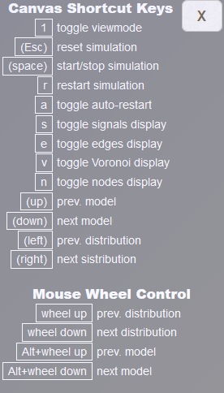

prev
next
Keyboard/Wheel Control
Some parameters and functionalities can be steered by typing in the canvas window or using the mouse wheel.
This is particularily useful is the simulator is in "embedded" mode where the usual controls are not shown.
A help window (see screenshot) listing the possible interactions (e.g. key "n" toggles display of nodes, "wheel down" switches to next distribution) can be invoked by typing "?" or "h".
You can try out the keys and wheel interactions in the embedded simulator below.
See also the section on Touch/Mouse Control.
